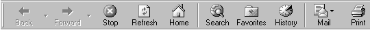

Resume |

SVN

Git
UML

SQL
MySQL
Sqlite
Oracle
T-SQL
Front-End

Address
HTML
CSS
Javascript
- Ajax
- jQuery
- extJS
- AngularJS

Languages
public class J2EE extends Java {
void Servlets ( ){}
void EJB ( ){}
void SpringMVC ( ){}
void Hibernate ( ){}
void JSP ( ){}
void JSF ( ){}
void Websocket ( ){}
void SOAP ( ){}
REST JaxRs ( ){}
boolean JUnit ( ){}
int Maven ( ){}
C# .NET framework
C, C++
XML, XSD
Qualifications
HTML 5CSS 3Javascript
Databases
|
Java
C, C++C#
|
Source Control
Design
Servers
|
Education
University of Waterloo
Computer Science Co-op with Minor in EconomicsGraduating Class of 2015
Projects
Pictoview
Chitchat
Ovaflow
Picture Viewer Repository
Pictoview is a central photos (and later songs/videos) repository. It allows viewers to access their photos in an organized and easy to use manner. It includes the ability to add customized tags to albums and later search upon those tags. The app allows users to store images in a centralized database without having to store the data on their devices.
It started as a means for me to store my large repository of pictures and organize them in a manageable fashion without having to store all the pictures on my mobile devices.
Technologies
J2EE, SpringMVC, REST, EJB, Sqlite, HTML5, CSS3, Javascript, AngularJS, jQuery, Android
Design
The project is divided into three Components, the client, the request server, and the Enterprise Java Bean.
Client
Android
The Android client uses volley to send HTTP requests to retrieve informations & photos from the server using REST-ful API. (Currently in development)
Browser
The browser is partially generated HTML page via JSP, with dynamically generated content via Ajax calls. Uses AngularJS to bind data to the page. Mobile version of page uses jQuery.
Server
Spring
Uses Spring MVC to generate client JSP pages as well as Ajax JSON responses. Images are send via output streams.
REST
Uses JAX-RS to supply API calls to the client. The information is taken from the enterprise bean.
EJB
The EJB provides access to the database which stores all the images and their information
Code : github.com